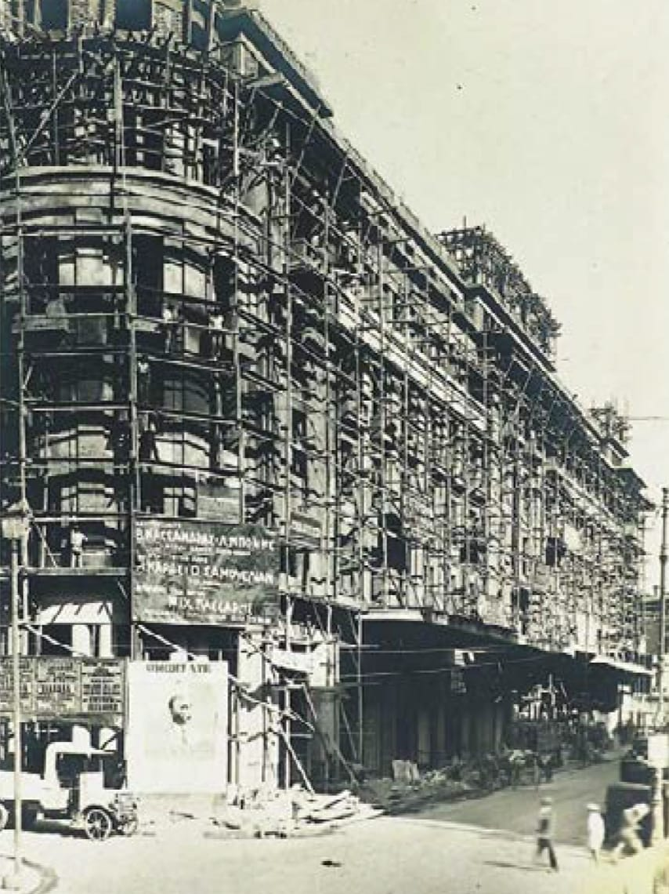
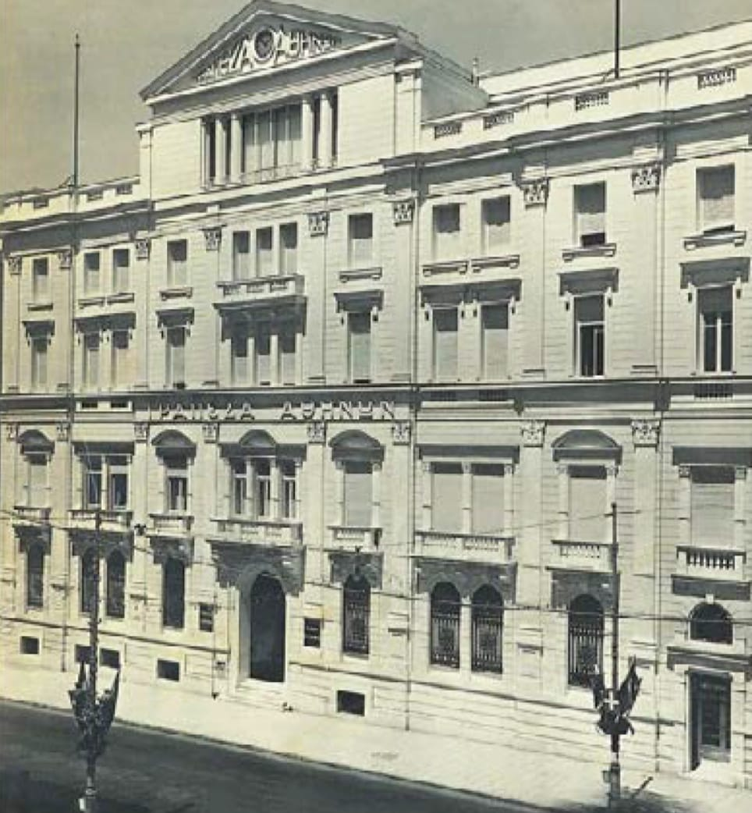
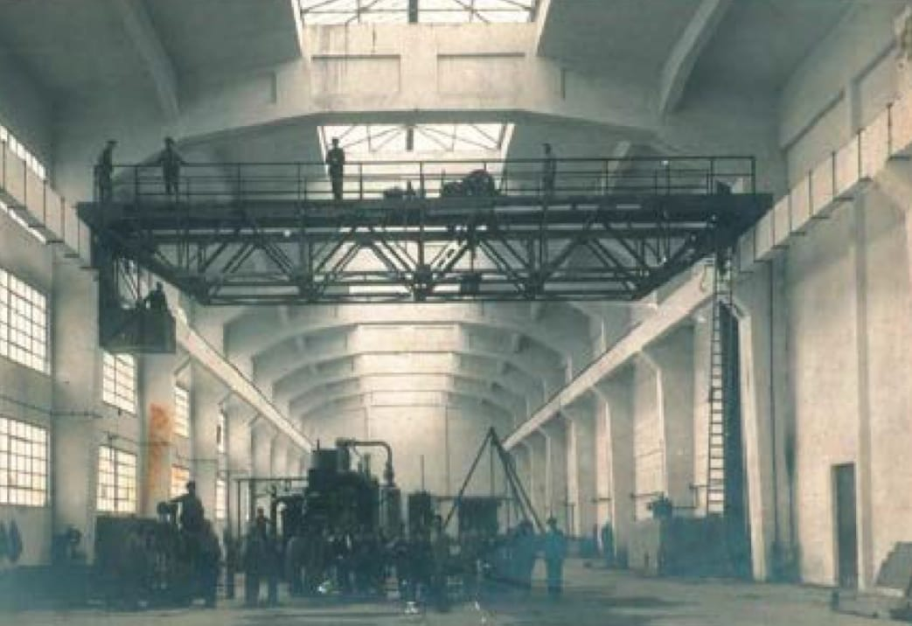
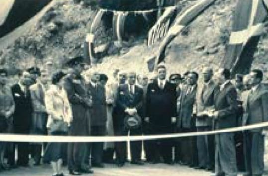
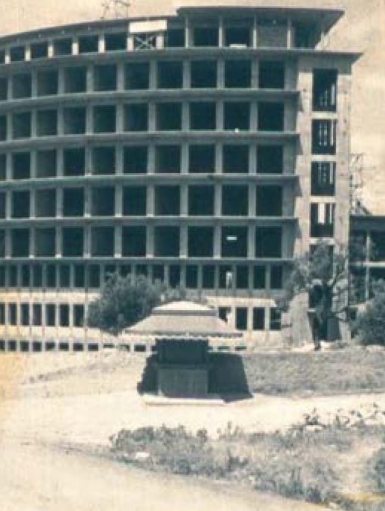
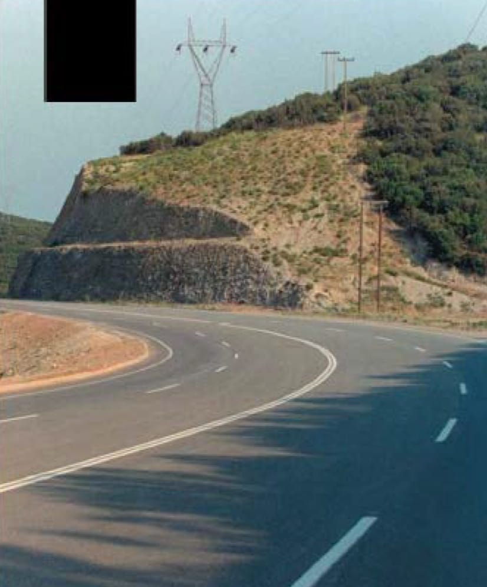
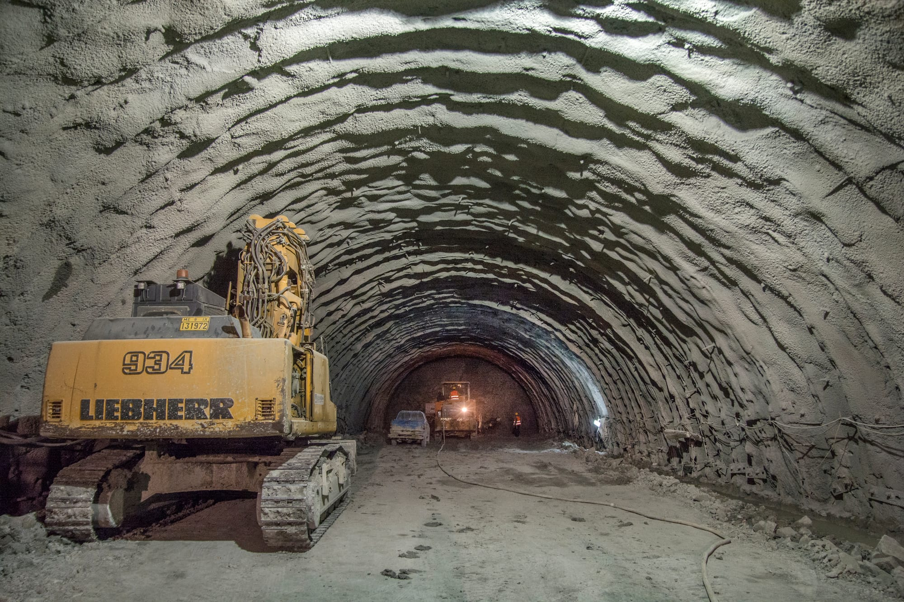

Χρονολόγιο
Το 1986 η ατομική επιχείρηση του Δημητρίου Ντινόπουλου λαμβάνει τη νομική μορφή Ανώνυμης Εταιρείας και αποκτά τη σημερινή της ονομασία. Ένας αιώνας χτίζοντας τα θεμέλια της Ελλάδας.
1923–2000 Ίδρυση
και ιστορική αναδρομή
Το κτίριο του Ενιαίου Ταμείου Στρατού στην Αθήνα. Η κατασκευή, που περιελάμβανε και το θέατρο Παλλάς, ήταν μία από τις πρώτες εφαρμογές οπλισμένου σκυροδέματος στην Ελλάδα με χρήση εισαγόμενου τσιμέντου.

1923 — Το κτίριο του Ενιαίου Ταμείου Στρατού στην Αθήνα. Η κατασκευή, που περιελάμβανε και το θέατρο Παλλάς, ήταν μία από τις πρώτες εφαρμογές οπλισμένου σκυροδέματος στην Ελλάδα με χρήση εισαγόμενου τσιμέντου.
Το ιστορικό κτίριο της Τράπεζας Αθηνών (Σταδίου 38) αποκαταστάθηκε το 1928.

Το ιστορικό κτίριο της Τράπεζας Αθηνών (Σταδίου 38) αποκαταστάθηκε το 1928.
Με την κήρυξη του Β' Παγκοσμίου Πολέμου ακολουθεί περίοδος αδράνειας, κατά την οποία η Ελλάδα περνά τις δυσκολίες του πολέμου και αργότερα του εμφυλίου.
Τον Ιανουάριο του 1950 η εταιρεία Περικλή Τριανταφυλλίδη αποκτά με απόφαση του Υπουργείου Συντονισμού τον ειδικό πτυχίο εργολήπτη Ε' τάξης για συμμετοχή σε διαγωνισμούς ανοικοδόμησης και εμφανίζεται, για πρώτη φορά μετά τον πόλεμο, με την κατασκευή δύο κύριων εθνικών οδικών αξόνων ΚΟΡΙΝΘΟΣ ΑΡΓΟΣ ΤΡΙΠΟΛΗ και ΑΡΓΟΣ ΝΑΥΠΛΙΟ — στο πλαίσιο του Σχεδίου Μάρσαλ και με εξοπλισμό που είχε παραχωρηθεί στο Ελληνικό Κράτος από τις Η.Π.Α.
Η εξαγορά της Gemme Α.Ε., μονάδας γεωτρήσεων και μεταλλείων, θυγατρικής της ΕΤΒΑ, φέρνει τη διεύρυνση των γνώσεων και της εμπειρίας της εταιρείας σε βαθιές γεωτρήσεις, εκμετάλλευση ορυκτών αποθεμάτων, ερευνητικές και γεωτεχνικές γεωτρήσεις.
1940 Το εργοστάσιο φυσιγγίων και πυρίτιδας του ομίλου Μποδοσάκη στην Ελευσίνα.


ΕΘΝΙΚΗ ΟΔΟΣ ΚΟΡΙΝΘΟΣ ΑΡΓΟΣ ΤΡΙΠΟΛΗ
1949–50 Τα εγκαίνια.
Η εταιρεία Ελληνικά Τεχνικά Έργα συγχωνεύεται με τη Θεμέλη Α.Ε., εταιρεία ανώτερου πτυχίου, επιτυχώς δραστήρια στην κατασκευαστική αγορά από το 1971. Η διευρυμένη Θεμέλη Α.Ε. μετακομίζει στο ιδιόκτητο κτίριο γραφείων 3.000 τ.μ., στην οδό Καποδιστρίου, τα σημερινά κεντρικά γραφεία της εταιρείας.
Η εταιρεία κατασκευάζει μεγάλα δημόσια έργα υποδομής, δίκτυα ύδρευσης και αποχέτευσης (Ναύπλιο, Κως), διευθετήσεις ποταμών και ρεμάτων (Κηφισός, Ποδονίφτης), γέφυρες (Αλιάκμονα, Ενιπέα), σήραγγες και πολλά άλλα.
Η Θεμέλη Α.Ε. συνεχίζει την ενεργό συμμετοχή της στον κατασκευαστικό κλάδο, εμπλουτισμένη σε ανθρώπινο δυναμικό, σύγχρονο εξοπλισμό και τεχνογνωσία, πάντα πιστή στις αρχές που η εταιρεία έχει θέσει και ακολουθεί καθ' όλη τη μακρά πορεία της.
Ακολουθεί η κατασκευή μεγάλης κλίμακας υπόγειων στρατιωτικών εγκαταστάσεων και ενός τμήματος του κύριου αυτοκινητοδρόμου μεταξύ Θεσσαλονίκης και τουρκικών συνόρων, που αργότερα γίνεται γνωστός ως ΕΓΝΑΤΙΑ ΟΔΟΣ.
Εκτός των παραπάνω, πολλά άλλα σημαντικά έργα κατασκευάστηκαν: το διυλιστήριο Ασπροπύργου, ξενοδοχεία, νοσοκομεία, εκπαιδευτικές και πανεπιστημιακές εγκαταστάσεις, βιομηχανικά κτίρια, αθλητικά κέντρα, κτίρια γραφείων.

1950 Νοσοκομείο ΚΑΤ, Κηφισιά, Αθήνα. Ένα από τα πρώτα μεταπολεμικά νοσοκομειακά συγκροτήματα.

1986 Αυτοκινητόδρομος Θεσσαλονίκη Τουρκικά σύνορα.
1993–2000 Μεγάλα έργα υποδομής
και ευρωπαϊκά προγράμματα
Ξεκινά η νέα διπλή σιδηροδρομική γραμμή Αθήνας-Θεσσαλονίκης. Η Θεμέλη Α.Ε. κατασκευάζει, για τη νέα γραμμή, προεντεταμένες γέφυρες σημαντικού μήκους πάνω από τον ποταμό Αλιάκμονα, στο Αιγίνιο Πιερίας, και τον ποταμό Ενιπέα, στα Ορφανά Καρδίτσας, χρηματοδοτούμενες από τη «νεαρή» τότε Ευρωπαϊκή Κοινότητα.
1993 ΑΙΓΙΝΙΟ, Πιερία: Γέφυρα ποταμού Αλιάκμονα για τη διπλή σιδηροδρομική γραμμή Αθήνας–Θεσσαλονίκης, μήκους 850μ. Θεμελίωση σε πασσάλους φρέατος, διαμέτρου: 1,20 μ, μήκους: 63 μ.
1994 ΟΡΦΑΝΑ, Καρδίτσα: Σήραγγα και προεντεταμένη γέφυρα ποταμού Ενιπέα, μήκους 350μ, για τη διπλή σιδηροδρομική γραμμή Αθήνας–Θεσσαλονίκης.
1998 ΙΣΘΜΟΣ ΚΟΡΙΝΘΟΥ: Υπόγεια διάβαση σιδηροδρόμου υψηλής ταχύτητας Ελευσίνα–Κόρινθος.
1999 ΑΓΡΙΝΙΟ, Φθιώτιδα: Κατασκευή φραγμάτων και τάφρων αντιπλημμυρικής προστασίας της περιοχής Αμουριοζηλεύτου–Βανοκλαδίου.
1998–99 Παράκαμψη Λάρισας — κόμβος Γυρτώνης.
1998 ΜΥΤΙΛΗΝΗ, Λέσβος: Κατασκευή δικτύου αποχέτευσης ομβρίων και ακαθάρτων υδάτων του κεντρικού και βόρειου τομέα Μυτιλήνης.
Με τα μεγάλα έργα που προγραμματίζονται από το 1998, χρηματοδοτούμενα από τον 2ο ευρωπαϊκό κοινοτικό προϋπολογισμό, σχεδιάζονται νέες οδικές χαράξεις όπως η ΕΓΝΑΤΙΑ ΟΔΟΣ, η ΙΟΝΙΑ ΟΔΟΣ και άλλες.
Εκσυγχρονίζεται το σιδηροδρομικό δίκτυο της χώρας με τη βελτίωση και αναβάθμιση της υπάρχουσας διπλής σιδηροδρομικής γραμμής Αθήνας-Θεσσαλονίκης, ώστε να αυξηθεί η ταχύτητα των τρένων στα 160 χλμ/ώρα και μετά την αντικατάσταση του σιδηροδρομικού υλικού στα 200 χλμ/ώρα.
ΙΝΟΙ, ΒΟΙΩΤΙΑ — Στρώση γραμμής μεταξύ των σιδηροδρομικών σταθμών Ινοΐ (χλμ 72+000) και Τιθορέας (χλμ 165+000). Το έργο, συνολικού μήκους 93 χλμ, περιελάμβανε σημαντικά τεχνικά έργα.
Η κατασκευή τμήματος SLAB TRACK στην περιοχή των Τεμπών είναι ένα έργο για το οποίο απαιτήθηκε ειδική τεχνογνωσία, καθώς το σύστημα SLAB TRACK αποτελεί νέα εξέλιξη στην κατασκευή σιδηροδρομικών δικτύων, που εφαρμόστηκε στην Ελλάδα για πρώτη φορά.
Σύμφωνα με τη μέθοδο RHEDA CLASSIC, ο εσχαρωτός στρωτήρας ενσωματώνεται σε σκυρόδεμα, σε αντίθεση με τη μέθοδο όπου οι στρωτήρες τοποθετούνται σε έρμα. Για την κατασκευή χρησιμοποιήθηκαν ειδικά εργαλεία και μηχανήματα, κατασκευασμένα από το μηχανουργείο της ΘΕΜΕΛΗ.
2004 — Αναβάθμιση σιδηροδρομικής γραμμής μεταξύ σταθμών Κορίνθου–Ανδρίτσας (78,10 χλμ) και Άργους–Ναυπλίου (10,60 χλμ), για ταχύτητες 100 χλμ/ώρα. Αντικατάσταση παλαιών σιδηροτροχιών και ξύλινων στρωτήρων με σιδηροτροχιές τύπου 54 kg/m και προκατασκευασμένους στρωτήρες σκυροδέματος.
2004–2009 Επέκταση
και εκσυγχρονισμός
Σύγχρονο τραμ στη μείζονα περιοχή της Αθήνας. Το έργο ξεκίνησε από το κέντρο της Αθήνας προς το Παλαιό Φάληρο και επεκτείνεται σήμερα, με νέες συμβάσεις, στις περιοχές Γλυφάδας και Βούλας.
Λιμάνι ΠΕΙΡΑΙΑ ΙΚΟΝΙΟ, Πέραμα — Κατασκευή σήραγγας μήκους περίπου 3,5 χλμ για τη σύνδεση θαλάσσιων δρομολογίων με το σιδηροδρομικό δίκτυο. Κατά τη διάρκεια της εκσκαφής εντοπίστηκε παρουσία διοξειδίου του άνθρακα, προερχόμενου από τον γειτονικό χώρο απορριμμάτων, γεγονός που απαιτούσε ειδική διαχείριση έργου και χρήση ειδικού σκυροδέματος.
2005 ΠΑΡΑΒΟΛΑ, Αγρίνιο — Υπόγειο αρδευτικό δίκτυο, μήκους ~30 χλμ. Το έργο περιελάμβανε την κατασκευή αντλιοστασίων, δεξαμενών ελέγχου, πλήρη ηλεκτρομηχανολογικό εξοπλισμό και ασφαλτόστρωση παρακείμενων αγροτικών δρόμων.
2005 ΚΑΛΑΜΩΤΗ, Χίος — Χωμάτινο φράγμα αργιλικού πυρήνα, μήκους ~500μ και 500.000 m³ όγκο. Η στεγανοποίηση πραγματοποιήθηκε με χρήση κουρτίνας τσιμεντενέσεων.
ΜΕΣΤΑ, Χίος — Εκσυγχρονισμός λιμένα, νέος κυματοθραύστης μήκους ~600μ. Εκσυγχρονισμός υφιστάμενης χερσαίας ζώνης και κατασκευή νέας ~30 στρεμμάτων, πλήρης ηλεκτρομηχανολογικός εξοπλισμός, συνδετήρια οδός με το λιμάνι και βοηθητικές κτιριακές εγκαταστάσεις.
2009 ΑΙΓΙΟ, Αχαΐα — Διπλή σιδηροδρομική σήραγγα, 3.252μ υπόγεια, τρεις σήραγγες διαφυγής. Η ΘΕΜΕΛΗ Α.Ε. κατασκευάζει το δυτικό τμήμα υπόγειου μήκους 1.140μ, σήραγγα διαφυγής 223μ και τα υπαίθρια έργα της δυτικής εισόδου (cut and cover, πασσαλότοιχος, παράπλευρη οδός, κτίριο, Η/Μ εγκαταστάσεις).
2010–2013 Ανθεκτικότητα
και νέοι ορίζοντες
2010–2012 Το ξέσπασμα της οικονομικής κρίσης στην Ελλάδα είχε άμεσο αντίκτυπο στις δραστηριότητες των κατασκευαστικών εταιρειών. Καθώς τα νέα έργα και οι διαγωνισμοί έχουν ουσιαστικά σταματήσει, η εταιρεία περνά μια «νεκρή» περίοδο και ασχολείται μόνο με την ολοκλήρωση προηγούμενων έργων. Η εταιρεία συνεχίζει τη δραστηριότητά της με τη ΔΕΗ σε Αγρίνιο και Ιωάννινα και επιπλέον ξεκινά αντίστοιχες δραστηριότητες στη Βόρεια Αθήνα.
Παρά την κρίση, η εταιρεία διατηρεί την ακεραιότητά της και συνεχίζει τη λειτουργία της χωρίς μειώσεις προσωπικού, από σεβασμό προς τους εργαζομένους και τα στελέχη της.
Η ΘΕΜΕΛΗ αναζητά συνεργασίες με ασιατικές χώρες όπως το Ισραήλ, το Ιράκ, το Κουρδιστάν κ.λπ. και έχει έρθει σε επαφή με κατασκευαστικές εταιρείες για ανάληψη έργων σε αυτές τις χώρες.
Τον Οκτώβριο του 2012, ολοκληρώνεται ένα εξαιρετικά σημαντικό έργο, μετά από πολλές δυσκολίες σχετικά με την καταλληλότητα, τις αδειοδοτήσεις και τις περιβαλλοντικές επιπλοκές: το πρώτο αιολικό πάρκο 17 MW της ΘΕΜΕΛΗ στο Ξηροβούνι Ναυπακτίας, (μέσο υψόμετρο 1.500 μ.) Δυτική Ελλάδα, ξεκινά τη λειτουργία του.

Οι εργασίες στο πάρκο ξεκίνησαν το φθινόπωρο του 2010, αρχικά κατασκευάστηκε ο δρόμος πρόσβασης και ο δρόμος εντός του πάρκου. Η κατασκευή σταμάτησε τον επόμενο χειμώνα και ξεκίνησε ξανά τον Απρίλιο 2011. Στα τέλη της άνοιξης του 2012, οι ανεμογεννήτριες έφτασαν στο λιμάνι του Μεσολογγίου και μεταφέρθηκαν στο εργοτάξιο.
Κατασκευή οδικού δικτύου εντός του πάρκου συνολικού μήκους 3,5 χλμ, και βελτίωση ασφαλτοδρόμου από Ναύπακτο προς Πλάτανο.
Είκοσι ανεμογεννήτριες GAMESA G52/850kW με διάμετρο πτερωτής 52μ και ύψος βάσης 44μ και εγκατάσταση μετεωρολογικού ιστού 4d.
Ανέγερση κτιρίου ελέγχου και σταθμού αποχιονισμού.
Δύο ανεξάρτητες γραμμές 20 kV για τη μεταφορά της παραγόμενης ενέργειας στον σταθμό μεταφοράς. Το μήκος κάθε γραμμής είναι 23,8 χλμ, εκ των οποίων 2,3 χλμ υπόγεια.
Σταθμός μεταφοράς 20–150 kV, χτισμένος σε 5 επίπεδα με 2 κτίρια ελέγχου.
2013 Χωρίς να λείπουν τα εμπόδια, δύο νέα έργα ξεκίνησαν, στα οποία η ΘΕΜΕΛΗ είναι ο μοναδικός ανάδοχος ή σε κοινοπραξία με άλλους.
Επέκταση του υπάρχοντος τραμ προς τον Πειραιά από τον τερματικό σταθμό στο Στάδιο Ειρήνης και Φιλίας.
Κατασκευή του δρόμου «Βόρειος Οδικός Άξονας Κρήτης» (ΒΟΑΚ) από τις Γούρνες στη Χερσόνησο.
Τα εργοτάξια έχουν ήδη στηθεί και οι εργασίες είναι επικείμενες.